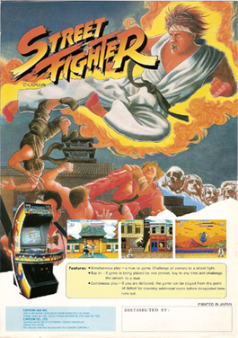
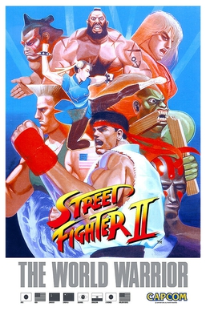
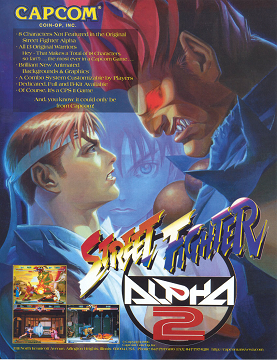
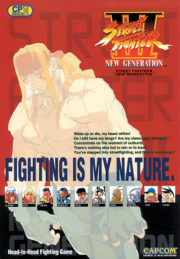
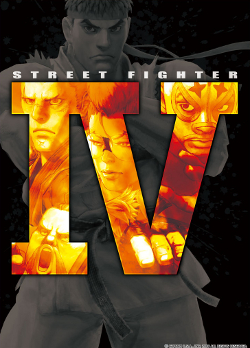
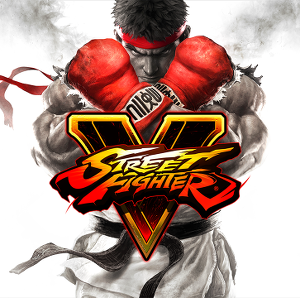
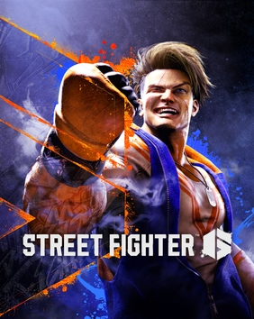

La compilacion PS4 que trae SF1, las versiones de SFII, Alpha y SFIII completo. Asi tenemos los clasicos de arcade en fisico.
Street Fighter X Tekken (PS3 y Vita), tambien en la vitrina. Capcom contra el mundo, Marvel incluido.
SFII reino primero; MK nacio como su respuesta gore. Dos escuelas: tecnica japonesa contra espectaculo occidental.